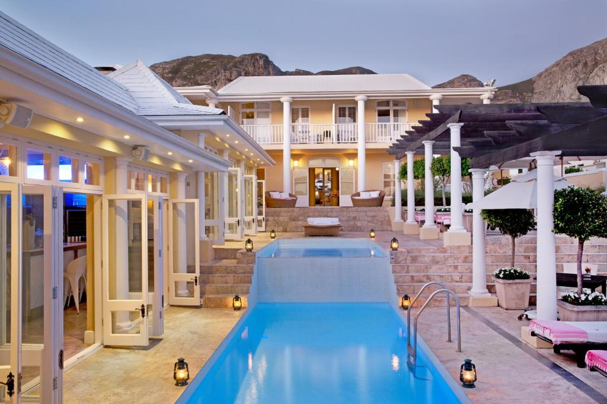

Africa is a continent known for its diverse landscapes, rich cultural heritage, and abundant wildlife. For those seeking an exclusive and luxurious escape, Africa offers a plethora of high-end resorts and lodges that cater to discerning travelers looking for a unique experience. From safari lodges nestled in the heart of the wilderness to beachfront resorts overlooking crystal clear waters, Africa's luxury accommodations promise an unforgettable getaway.
Here are the top 10 exclusive resorts and lodges in Africa that epitomize luxury and opulence.
1. Singita Grumeti, Tanzania

Situated in the western corridor of the Serengeti in Tanzania, Singita Grumeti offers unparalleled luxury in the heart of the African bush. This award-winning lodge provides guests with exquisite accommodations, world-class cuisine, and exceptional wildlife experiences, making it a top choice for discerning travelers.
Singita Grumeti features elegant and spacious accommodations, gourmet dining experiences, and world-class amenities. Guests can enjoy game drives to witness the abundant wildlife in the area, including the famous Great Migration of wildebeest and zebras. The lodge also offers guided walking safaris, bush picnics, and other activities to explore the surrounding savannah landscape.
The lodge is renowned for its commitment to conservation and community development, with initiatives that aim to protect the natural environment and support local communities in the area. Guests at the Singita Grumeti Lodge can immerse themselves in the beauty of the African wilderness while contributing to these important conservation efforts.
Overall, the Singita Grumeti Lodge in Tanzania provides a luxurious and sustainable safari experience for travelers looking to experience the beauty and wildlife of Africa in style.
2. Royal Malewane, South Africa

Royal Malewane Lodge is a luxurious safari lodge located in South Africa's Greater Kruger National Park region. Situated within a private game reserve, the lodge offers an exclusive and intimate safari experience in the heart of the African bush.
Accommodation at Royal Malewane consists of beautifully appointed luxury villas and suites, each designed to provide guests with the utmost comfort and privacy during their stay. The lodge's decor combines traditional African elements with modern amenities, creating a stylish and elegant retreat in the wilderness.
Guests at Royal Malewane can enjoy daily safari activities such as game drives, guided bush walks, and birdwatching excursions led by knowledgeable guides and trackers. The region is renowned for its diverse wildlife, including the Big Five (lion, leopard, elephant, buffalo, and rhinoceros), providing ample opportunities for unforgettable wildlife encounters.
In addition to the exceptional safari experiences, Royal Malewane offers world-class cuisine, spa treatments, and a range of leisure facilities to enhance guests' stay. The lodge's commitment to personalized service and attention to detail ensures that visitors have a truly memorable and relaxing safari experience in the heart of the African bush.
3. Angama Mara, Kenya

Angama Mara is a luxury safari lodge located in the Maasai Mara region of Kenya. Situated atop the Oloololo Escarpment overlooking the Maasai Mara National Reserve, Angama Mara offers stunning views of the savannah below. The lodge is known for its elegant and spacious tented suites, each featuring floor-to-ceiling glass windows that provide panoramic views of the surrounding landscape.
Guests at Angama Mara can enjoy a range of activities, including game drives in the Maasai Mara National Reserve to spot the iconic wildlife of the region, guided walks along the escarpment, hot air balloon safaris, and cultural visits to Maasai communities. The lodge also has a swimming pool, a fitness center, a safari shop, and a curated art gallery showcasing local talent.
In addition to its luxurious accommodations and top-notch amenities, Angama Mara is renowned for its exceptional service and warm hospitality. The lodge offers a unique blend of adventure, relaxation, and immersion in the natural beauty of the Maasai Mara, making it a popular choice for discerning travelers seeking an unforgettable safari experience in Kenya.
4. North Island, Seychelles

North Island Lodge in Seychelles is an exclusive and luxurious private island resort located in the Indian Ocean. It is renowned for its pristine beaches, crystal-clear waters, and lush tropical surroundings. The resort offers guests the ultimate in seclusion and luxury with just 11 private villas nestled among the island's natural beauty.
Each villa at North Island Lodge is designed to provide the highest level of comfort and privacy, featuring spacious living areas, private plunge pools, and stunning views of the ocean. Guests can enjoy a range of activities on the island, including snorkeling, diving, fishing, and spa treatments.
North Island Lodge is also known for its commitment to sustainable tourism practices, with a focus on conservation and environmental protection. The island has been rehabilitated to restore its natural habitat and protect endangered species, making it a paradise for nature lovers and eco-conscious travelers.
Overall, North Island Lodge offers a truly exclusive and unforgettable escape for those seeking a luxury retreat in a pristine island setting.
5. Mnemba Island, Tanzania

Mnemba Island is a private island located off the northeast coast of Zanzibar, Tanzania. It is a small, exclusive island known for its luxurious accommodations and stunning natural beauty. The island is surrounded by a coral reef that is part of the Mnemba Atoll Marine Conservation Area, making it an ideal destination for snorkeling and diving.
Mnemba Island is home to a luxury eco-lodge, where guests can enjoy a secluded and peaceful retreat in a pristine environment. The lodge offers spacious and beautifully appointed beachfront bandas, delicious cuisine featuring fresh seafood and local produce, and a range of activities such as snorkeling, diving, kayaking, and sunset cruises.
Due to its remote location and limited number of guests allowed at a time, Mnemba Island offers a truly exclusive and private island experience for those looking to unwind in a tropical paradise. The island is also a nesting site for green sea turtles, and guests may have the opportunity to witness these magnificent creatures during the nesting season.
Overall, Mnemba Island is a perfect destination for travelers seeking luxury, tranquility, and natural beauty in a pristine marine environment.
6. Birkenhead House, South Africa
Birkenhead House is a luxury boutique hotel located in the coastal town of Hermanus in South Africa. Situated on a cliff overlooking Walker Bay, Birkenhead House offers stunning views of the ocean and is known for its elegant and sophisticated decor. The hotel features individually designed rooms and suites, as well as a range of amenities including a spa, swimming pool, and gourmet restaurant.
Guests can enjoy whale watching from the comfort of the hotel during the season, as Hermanus is famous for being one of the best places in the world to see whales from the shore. Birkenhead House is renowned for its world-class service and luxurious accommodation, making it a popular choice for travelers looking for a tranquil and exclusive getaway on the Western Cape coast.
7. Segera Retreat, Kenya

Segera Retreat is a luxurious safari lodge located in Laikipia County, Kenya. The retreat is set on a private wildlife conservancy of more than 30,000 acres, and it offers guests the opportunity to experience the beauty and diversity of the Kenyan landscape. The retreat features a variety of accommodations, including luxury suites, tented camps, and private villas. Guests can enjoy a range of activities, including game drives, horseback riding, mountain biking, and nature walks.
The retreat also offers a variety of spa treatments and wellness programs. Segera Retreat is known for its commitment to sustainability and its support for local communities. The retreat has been recognized as a leader in sustainable tourism, and it is committed to protecting and preserving the natural environment.
Segera Retreat is the perfect destination for those looking for a luxurious and eco-friendly safari experience. From its stunning setting to its world-class facilities, Segera Retreat offers guests a truly unique and unforgettable experience.
8. The Royal Livingstone, Zambia

The Royal Livingstone is a luxury hotel located on the banks of the Zambezi River in Livingstone, Zambia. The hotel is named after the famous explorer and missionary, David Livingstone, and it is located just minutes away from Victoria Falls, one of the Seven Natural Wonders of the World. The Royal Livingstone offers guests a range of accommodation options, including deluxe rooms, suites, and private villas.
Guests can enjoy a wide range of activities, including game drives, river cruises, and bird watching. The hotel is also home to the world-renowned Royal Livingstone Spa, where guests can relax and rejuvenate with a range of treatments and therapies. The Royal Livingstone is known for its opulent interiors, its breathtaking views of the Zambezi River, and its impeccable service.
For those looking for a truly memorable and luxurious experience, the Royal Livingstone is the perfect choice. Whether you're looking to relax and recharge or explore the wonders of Zambia, the Royal Livingstone has something for everyone.
9. Royal Chundu, Zambia

Royal Chundu is a luxury lodge located on the banks of the Zambezi River in the Chiawa Game Management Area of Zambia. The lodge is known for its stunning natural setting, its world-class amenities, and its impeccable service. Royal Chundu offers guests a variety of accommodation options, including safari tents, villas, and suites. The lodge also has a spa, a gym, and a swimming pool.
Guests can enjoy a wide range of activities, including game drives, river cruises, and fishing. The lodge is also a perfect spot for bird watching, with over 400 species of birds found in the area. Royal Chundu is known for its secluded and tranquil setting, which makes it the perfect place to relax and disconnect from the hustle and bustle of daily life.
The lodge's staff is dedicated to providing guests with an unforgettable experience, and they are always on hand to assist with any requests. Whether you're looking for a romantic getaway or a unique safari experience, Royal Chundu is the perfect place to escape and enjoy the beauty of nature.
10. Four Seasons Safari Lodge Serengeti, Tanzania

Four Seasons Safari Lodge Serengeti is a luxury resort located in the Serengeti National Park in Tanzania. The resort offers stunning views of the savannah, as well as easy access to some of the best game viewing in the world. Guests can enjoy a variety of activities, including game drives, hot air balloon rides, and guided nature walks. The resort also has a full-service spa, a fitness center, and a swimming pool.
Four Seasons Safari Lodge Serengeti is known for its high level of service, as well as its luxurious accommodations and amenities. The resort has been awarded five stars by TripAdvisor and has been praised for its stunning location and its commitment to sustainability. Guests can dine at the resort's restaurant, which offers both international and traditional African cuisine, or relax with a drink at the poolside bar.
Four Seasons Safari Lodge Serengeti offers a truly unique and luxurious safari experience that is sure to be unforgettable. With its stunning views, luxurious accommodations, and wide range of activities, this is the perfect place to experience the beauty and excitement of the Serengeti.
In conclusion, Africa is home to some of the most exclusive and luxurious resorts and lodges in the world, offering discerning travelers a truly exceptional escape. Whether you prefer a beachfront retreat, a safari adventure, or a secluded island paradise, Africa's luxury accommodations promise a unique and unforgettable experience. With personalized service, gourmet cuisine, and unparalleled wildlife encounters, these top 10 exclusive resorts and lodges in Africa epitomize luxury and opulence, making them the perfect choice for an indulgent getaway in the heart of the continent.